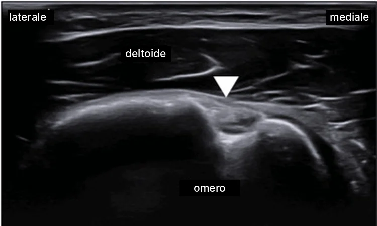

Il tendine del capo lungo del bicipite passa dentro la spalla, in un solco dell'omero, prima di attaccarsi sul bordo della glena. Quando si infiamma dà dolore sulla parte anteriore della spalla.
Raramente è l'unico problema: nella maggior parte dei casi accompagna una sofferenza della cuffia dei rotatori, e si tratta insieme a quella.

Come si manifesta
- Dolore sulla faccia anteriore della spalla, a volte lungo una linea che scende verso il braccio.
- Peggiora sollevando pesi con il palmo rivolto in alto, o portando il braccio indietro.
- Fastidio di notte, come nelle altre sofferenze della cuffia.
- Il dolore si riproduce premendo sul solco dove il tendine scorre.
Se il tendine si rompe, il ventre del bicipite scende verso il gomito e forma il cosiddetto «segno di Popeye». Fa impressione, ma la perdita di forza che ne deriva è in genere modesta.
Quando preoccuparsi
Contatta il medico presto se
- hai sentito uno schiocco improvviso durante uno sforzo e il profilo del braccio è cambiato;
- la spalla ha smesso di funzionare dopo un trauma;
- la spalla è calda, gonfia e hai febbre;
- il dolore notturno non ti fa dormire da settimane.
La rottura del capo lungo non è un'urgenza chirurgica, ma va valutata: spesso è la spia di una sofferenza più ampia della cuffia.
Cosa puoi fare tu
Fai
- Continua a usare il braccio, riducendo per un po' i sollevamenti con il palmo in alto.
- Comincia un programma di esercizi progressivi per cuffia e scapola.
- Dai tempo al trattamento: si ragiona in settimane.
- Per la terapia farmacologica chiedi al medico.
Non fare
- Non immobilizzare la spalla.
- Non affrettarti a fare esami diagnostici senza aver chiesto il parere del tuo medico.
- Non trattare il bicipite come un problema isolato: quasi mai lo è.
Le cure, e quanto funzionano
Per questa condizione non esiste una linea guida dedicata. Il trattamento conservativo segue gli stessi principi della tendinopatia della cuffia: esercizio progressivo come intervento centrale, educazione, terapia manuale come aiuto, farmaci per il dolore a breve termine, infiltrazione di cortisone solo per un sollievo temporaneo e non come prima scelta.[1]
E l'intervento?
Quando si decide di operare, le due strade sono la tenotomia, cioè tagliare il tendine e lasciarlo scivolare, e la tenodesi, cioè tagliarlo e riancorarlo all'osso.
Una metanalisi di sette studi su 622 spalle, di cui tre randomizzati, ha confrontato le due tecniche.[2] Il punteggio funzionale risultava un po' migliore dopo tenodesi, ma con eterogeneità elevata fra gli studi, tanto che gli autori invitano a interpretare il dato con molta cautela. La differenza netta riguarda l'aspetto estetico: il segno di Popeye è nettamente meno frequente dopo tenodesi.
In sintesi: la scelta fra le due tecniche pesa più sull'estetica che sulla funzione, e le prove disponibili sono limitate.
Quando serve lo specialista
Per capire se il dolore viene davvero dal bicipite o dalla cuffia, per impostare l'esercizio e per discutere, numeri alla mano, quale trattamento sia più idoneo per la tua situazione.
Da dove vengono queste informazioni
- Desmeules F, Roy JS, Lafrance S, Charron M, Dubé MO, Dupuis F, Beneciuk JM, Grimes J, Kim HM, Lamontagne M, McCreesh K, Shanley E, Vukobrat T, Michener LA. Rotator cuff tendinopathy diagnosis, non-surgical medical care and rehabilitation: a clinical practice guideline. J Orthop Sports Phys Ther 2025. doi:10.2519/jospt.2025.13182
- Ge H, Zhang Q, Sun Y, Li J, Sun L, Cheng B. Tenotomy or tenodesis for the long head of biceps lesions in shoulders: a systematic review and meta-analysis. PLoS One 2015;10(3):e0121286. doi:10.1371/journal.pone.0121286. Sette studi, 622 spalle, di cui tre randomizzati.
Scheda aggiornata il 5 novembre 2026. Prossima revisione prevista entro novembre 2028.
Trattamenti citati in questa scheda
Qui sopra c’è scritto se e quando sono indicati. Queste pagine spiegano in che cosa consistono.
Cerca un'altra scheda
Un disturbo, un trattamento, o anche solo il punto che fa male: «formicolio», «tallone», «spalla congelata».